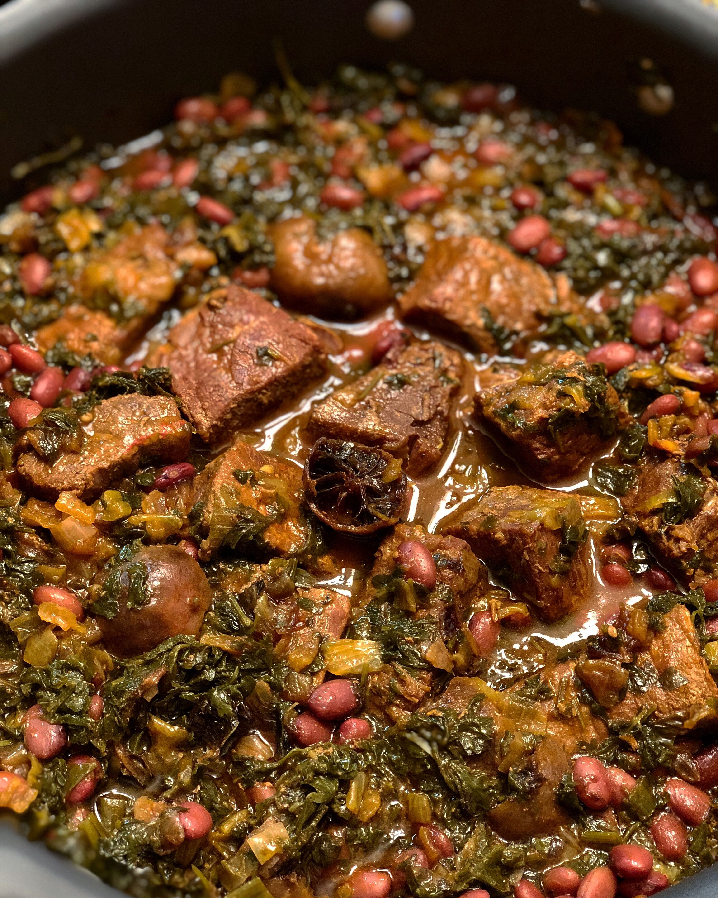

Home
Recipes
Measurements Conversion
Common Ingredients
Ghormeh Sabzi
Ingredients
1 lb beef or lamb, cubed
1 onion, chopped
2 bunches of fresh parsley, chopped
1 bunch of fresh cilantro, chopped
1 bunch of fresh fenugreek, chopped
2 tablespoons dried fenugreek leaves
4 cloves of garlic, chopped
1 teaspoon turmeric
1/2 teaspoon black pepper
2 dried limes
Salt to taste
Oil for frying
Instructions
Heat some oil in a pot over medium-high heat.
Add the cubed meat and fry until browned.
Add the chopped onion and fry until translucent.
Add the chopped herbs, garlic, turmeric, black pepper, and salt to the pot.
Stir well, then add enough water to cover the meat and bring to a boil.
Add the dried limes to the pot.
Lower the heat and simmer for 2-3 hours, stirring occasionally and adding more water as needed.
Serve hot with Persian rice.
